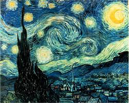
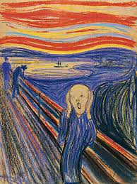

Welcome to my art gallery, a space where creativity and imagination come alive through five world-renowned masterpieces. Each artwork tells its own story—whether it’s the swirling skies of Van Gogh, the mysterious smile of da Vinci, or the dreamlike visions of Dali. This collection brings together paintings that have inspired generations, blending timeless beauty, emotion, and innovation. Step inside and explore how these iconic works of art continue to spark wonder and connect us to the genius of their creators.
The Mona Lisa is perhaps the most recognized painting in the world, admired for its mysterious smile and lifelike detail. Leonardo da Vinci’s masterpiece captures both beauty and intrigue, making it a timeless symbol of Renaissance art. Painted between 1503 and 1506, the Mona Lisa is Leonardo da Vinci’s most celebrated work and one of the greatest treasures of the Renaissance. Housed in the Louvre Museum in Paris, it is admired for its exquisite detail, lifelike realism, and the mysterious smile that continues to puzzle viewers and scholars. The painting’s atmospheric background and Leonardo’s mastery of sfumato (soft blending of colors) make it a symbol of artistic perfection and intrigue.

To know more : Wikipedia
Created in 1889 while Van Gogh was at an asylum in Saint-Rémy-de-Provence, The Starry Night depicts a swirling night sky filled with vibrant stars over a quiet village. This painting reflects Van Gogh’s emotional intensity, with its bold brushstrokes and luminous color contrasts. Today, it is one of the most beloved works at the Museum of Modern Art in New York, representing both the turbulence of the artist’s mind and the beauty of the natural world.
To know more : Wikipedia
Painted in 1931, Dalí’s The Persistence of Memory is an iconic example of surrealism. The work is instantly recognizable by its melting clocks draped across a barren landscape, symbolizing the distortion of time and reality. With dreamlike imagery and unsettling beauty, this masterpiece challenges logic and invites viewers to explore the subconscious mind. It remains one of the most studied and reproduced works of modern art, displayed at the Museum of Modern Art in New York.

To know more : Wikipedia
Created in 1893, The Scream is one of the most powerful visual expressions of human emotion. Edvard Munch used vivid colors and dramatic curves to depict a figure overwhelmed by an existential cry beneath a blood-red sky. The painting captures deep feelings of fear, anxiety, and alienation that resonate across cultures and time. Several versions of The Scream exist, but the most famous is displayed in the National Museum in Oslo, Norway.
To know more : Wikipedia
Painted around 1665, Johannes Vermeer’s Girl with a Pearl Earring is a mesmerizing portrait often referred to as the “Mona Lisa of the North.” Unlike traditional portraits, the girl is depicted in a simple, intimate setting with no background, drawing full attention to her enigmatic gaze and luminous pearl earring. The painting’s play of light and shadow demonstrates Vermeer’s remarkable skill in capturing subtle human expression. Today, it resides in the Mauritshuis museum in The Hague, Netherlands.

To know more : Wikipedia
Materials -
Techniques -
| Artwork | Medium | Year |
|---|---|---|
| Mona Lisa – Leonardo da Vinci | Oil on poplar wood panel | 1503–1506 |
| The Starry Night – Vincent van Gogh | Oil on canvas | |
| The Persistence of Memory – Salvador Dalí | Oil on canvas | 1931 |
| The Scream – Edvard Munch | Tempera and pastel on cardboard | |
| Girl with a Pearl Earring – Johannes Vermeer | Oil on canvas | 1665 |